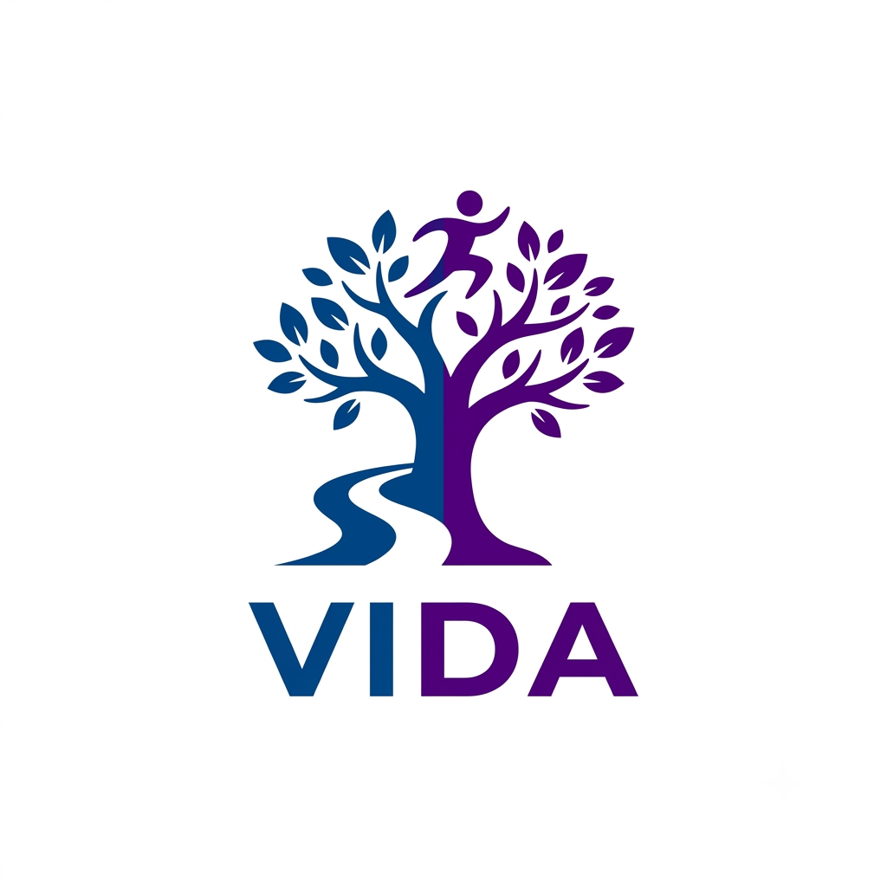

Bem-Vindos ao mudinho da ana
Por: Ana Flavia
Fala, galerinha! Seja bem-vindo ao meu mundo
Fala minha gente! Sejam muito bem-vindos ao meu mundinho de loucuras! Todos me chamam ana, e criei o meu blog mundinhod.ana — com esse estilo azul — e aqui vai ser meu espacinho onde vou falar sobre minha vida de loucuras, e ser muito sincera com vocês. Aqui vou falar sobre as coisa que faço, falar das minhas fofoquinhas e também deixar vocês super curioso sobre meus conhecimentos, então fiquem a vontade para responder nos comentários e tirar suas dúvidas! E falar qual seria a melhor dúvida? ��✨